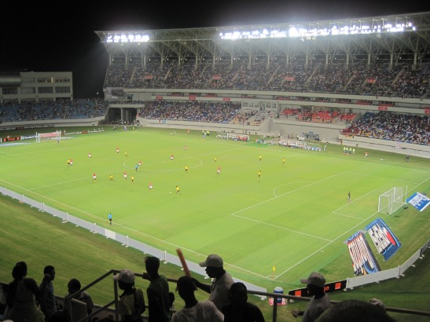
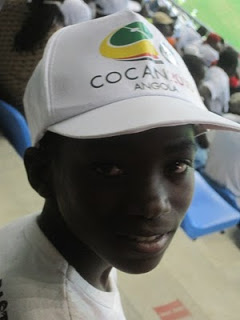

Kizua Mwangola: Part 9: Deadly Mambas
Saturday, January 16, 2010
So, the entertainment of the day proved to be entertaining. First course was a pleasing Nigeria v Benin, with the Super Eagles displaying the usual not-so-super form. Somehow they managed to scrape a win with a penalty that didn't look that obvious to me — but then again, that's the biggest problem with live games: no replays. Benin looked good though, or maybe it just was a weak Nigeria that made them look so good. Second course was the very much waited Mozambican mambas against Egypt. If Egypt had a great support from the public against Nigeria, this time they felt the might of 30-odd thousand Benguelans against them. I mean, jeez, we even sang Mozambican songs. This was better support than they would have in Maputo, I tell you.

Figure 1: Mozambique v Egypt, Benguela. (c) Shahinara Craveiro
The first half was exciting, mainly because Egypt didn't quite manage to score, but Mozambique did make a few interesting moves. The crowed got to the interval screaming very loudly every time Mozambique had the ball in Egypt's half (my own voice is almost gone). It was clear that the Mambas were feeling the pressure to score, so they decided to let loose and make the deadly mamba venom felt. Rather unfortunately, the target of all of that uncontrolled aggression was themselves, with an own goal starting the second half. Or was this the old score-an-own-goal-to-distract-them, a strategy tried and tested on the previous game against Benin? If it was, it didn't work.
Egypt didn't really need the extra help — but didn't deny it either — and looked very much the part of champions-waiting-for-a-crown. In some ways, watching Egypt play is not that dissimilar to watching a well drilled army fighting against a bunch of territorial reserves. Its not that they do anything particularly flashy, or flairy or crowd-pleasing; they are just a really well oiled, well drilled machine, where everyone knows their position, everyone knows who they're covering, everyone knows where they should be when attacking and everyone — and I mean everyone — knows how time waste when they're winning. Its amazing. The only chances they give away, other than the rare defence mistake, are free-kicks and shots from far away — and Mozambique never looked dangerous in either of these.
If you're in Angola you've seen the "Miudo" (kid) TV ad, featuring Angola's captain Kali and the "Miudo". Well, we thought we'd find our Miudo too and gave away a bunch of tickets to kids waiting outside the stadium — hey, at 500 Akz a pop one can just about afford the luxury. One of them we decided to drag with us, and he reluctantly accepted or invitation. The miudo was pretty quiet. In fact, he didn't say a single word during both games, communicating only by affirmatively shaking his head to our inquisitive questions: do you want some juice? are you enjoying the game? do you want a cap? He then quietly disappeared minutes before the end of the second game. He seemed amazed with the big stadium though.

Figure 2: The "Miudo" (c) Shahinara Craveiro
On our way back we decided to avoid the crows at the parking lot's exit, taking instead some really alternative routes. This involved trekking through some very dark bairros, places where the electricity hasn't got to (nor will it) and where people can't afford generators either. Goes to say a lot about safety in this country when you can ride the back of a pick-up truck across the "dangerous" bairros, chatting to the people as you go along without worrying about being mugged.
Shahin has decided to busy herself by becoming a cook; as I write this she's serving Pizzas to starving journalists from many different countries.
| Back to previous chapter | Back to chapter index. | Forward to next chapter |